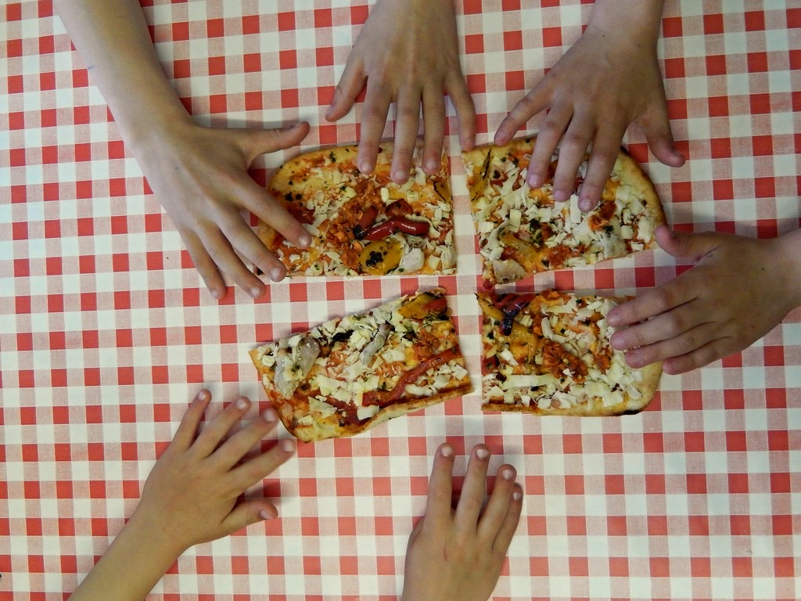
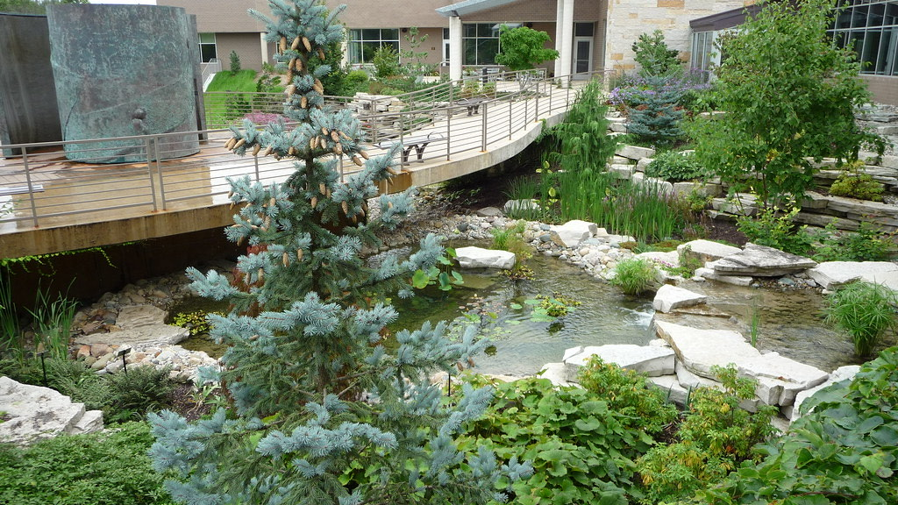

Una escuela que se construye entre todos
El calendario de La Nueva Escuela Culiprán está marcado por celebraciones, salidas y jornadas donde las familias participan activamente. Aquí la comunidad no es un discurso: es un trabajo compartido, mes a mes.

El ritmo de nuestra comunidad
Inicio de año y bienvenida
Recibimos a las familias nuevas y retomamos el ritmo escolar en comunidad.
Día del Libro
Desfile de personajes literarios: niños, niñas y guías se disfrazan de sus personajes favoritos.
Día del Estudiante
Una jornada especial para celebrar a cada niño y niña de la escuela.
Wetripantu
Celebramos el año nuevo indígena y el solsticio de invierno junto a toda la comunidad.
Fiestas Patrias
Taller de cueca y celebración de las tradiciones chilenas, a la chilena y a nuestro modo.
Trekkings mensuales y salidas educativas
Caminatas a cerros y entornos naturales, además de visitas a museos y fundaciones científicas.
Mingas de mantención
Jornadas donde las familias se reúnen a cuidar y mejorar juntas el espacio de la escuela.

Cómo participan las familias
Las familias son parte activa del día a día: se turnan y colaboran en mingas de mantención, asisten a reuniones de apoderados y participan en el centro de apoderados, que hoy está en formación.
No se trata de una participación simbólica: cada mano cuenta para que este proyecto siga funcionando y creciendo.


Ven a conocer nuestra comunidad
La mejor forma de entender esta vida escolar es viviéndola. Te esperamos.